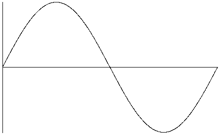
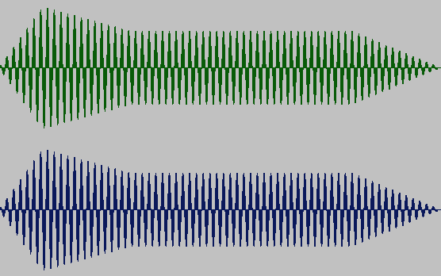

Hans Mikelson
Introduction
This article originated as a post to the Csound mailing list. It is my attempt at explaining how to use the basics of Csound to a beginner. To use Csound two different files need to be created. An orchestra file and a score file. These files are text files and are usually called myfile.orc and myfile.sco. If the reader is familiar with MIDI the following analogy may be helpful. The Csound orchestra corresponds to a sound module and the Csound score corresonds to a MIDI file. The orchestra file describes the type of sound to be produced and the score file handles the notes.
The Orchestra
The orchestra starts with a header which is followed by a list of instruments. The header tells what the sample rate of the sound file will be, what the control rate is, how many channels the sound file will have (mono, stereo, quad). Following is a typical header:
sr=44100 ; Sample Ratekr=22050 ; Control Rateksmps=2 ; sr/kr As far as I know this is always the casenchnls=2 ; 1=mono, 2=stereo, 4=quad
Everything following a semicolon on the same line is a comment. The header is followed by one or more instruments. A simple instrument follows:
instr 1 ; Instrument 1 begins hereaout oscil 10000, 440, 1 ; An oscillator outs aout, aout ; Output the results to a stereo sound file endin ; Instrument 1 ends here
Every instrument starts with instr # and ends with endin. Each line has a single command or opcode. The main command in this instrument is the oscil opcode. Every opcode has zero or more variables on the left side of the opcode and zero or more parameters on the right side depending on the opcode. The oscil opcode is a simple oscillator. The first parameter for oscil tells how loud the signal should be, in this case 10000. (Note that 16 bits of digital audio translates to about +/- 32000 so that's the maximum loudness) The second parameter for oscil tells what the frequency of the oscillator is, in this case 440 cycles/sec. The third parameter tells the waveform or table of the oscillator. The waveforms are generated in the score which I will discuss later. The result of the oscillator is stored in the variable aout. The outs opcode takes what is in the variable aout and generates some type of output from it. Output is often generated as a sound file although it is possible to generate output in real time so that a Csound instrument could be played from a MIDI keyboard.
Variables
There are several types of variables used in Csound. The above instrument uses one variable "aout". The first letter of the variable tells what kind of variable it is. Local variables start with the letters "i", "k" or "a". Variables starting with the letter "i" are initialized to a value when the instrument is started and do not usually change. The letter "a" indicates an audio rate variable and the letter "k" indicates a control rate variable. Be careful not to give them the same name as an opcode. Local variables can only be used within a single instrument.
There are also some special "p" variables or parameters. The "p" values are supplied by the score. The first three p parameters have a special meaning.
p1 is the instrument number.
p2 is the time the instrument starts.
p3 is the duration of the instrument.
p4, p5, p6 etc. can be used for different things. They send values from the score to the orchestra.
Usually an instrument only knows about the variables between the instr and the endin opcodes. Sometimes you may wish to send a signal from one instrument to another. Global variables are variables which can be accessed by any instrument.Global variables begin with gi, gk or ga. There are also some special global variables sr, kr, ksmps, nchnls which I described earlier.
The Score
There are two different events typically found in a score. They are the tables and the instrument events. Following is a simple score which could be used with the above orchestra:
;Table# Start TableSize TableGenerator Parameter Commentf1 0 16384 10 1 ; Sine;Instrument# Start Durationi1 0 1
First I'll discuss the call to the instrument. The i indicates that it is an instrument event. The 1 (p1) means to call instrument number 1. The next number (p2) is 0. This tells when the instrument should start playing. The third number (p3) is the duration in this case 1 second. These values can be accessed in the instrument as p1-p3 respectively.
Next consider the waveform function table (f). There are five numbers on this line. The first number is the number the table will be referenced by in the orchestra. The second number is the time at which this table becomes available to the orchestra. The third number tells how many samples are in the table. The fourth number tells which GEN routine to use to generate the table. In this case GEN routine 10 is selected. Any following numbers on this line are used by the GEN routine to control what is generated. GEN 10 with a 1 as its only parameter generates a sine wave. Other GEN routines can be used to generate square, triangle or many other shapes, including reading in user supplied samples.
Many opcodes make use of tables. The table number is given to the opcode as one of its parameters. In the simple orchestra above the third parameter tells oscil which table to use for its waveform. The third parameter is a 1 so table 1 (sine wave) is used.

Figure 1Sine wave
One drawback of this orchestra/score is that it only plays one pitch at one volume. Following is a more versatile orchestra/score.
instr 2 ; Instrument 2 begins hereiamp = p4 ; Amplitudeifqc = p5 ; Frequencyitabl1 = p6 ; Waveform Tableaout oscil iamp, ifqc, itabl1 ; An oscillator outs aout, aout ; Output the results to a stereo sound file endin ; Instrument 2 ends here; SCORE;Table# Start TableSize TableGenerator Parameter Commentsf1 0 16384 10 1 ; Sine;Instrument#(p1) Start(p2) Duration(p3) Amplitude(p4) Frequency(p5) Table(p6)i2 0 1 10000 440 1
This does the same thing but more control has been moved to the score. That way you can play a variety of notes by just making more "i" entries in the score. For example:
; Instr Sta Dur Amp Freq Tablei2 0 1 2000 330 1i2 1 1 4000 440 1i2 2 1 6000 600 1i2 3 1 8000 660 1
In this case a variety of volumes and pitches are generated. There is one more problem. If the fqequency does not match up with the duration there can be a loud click at the end of the sound. That is because there is no amplitude envelope. The sound just ends abruptly rather than ramping down smoothly. To add an envelope use the following instrument:
instr 3 ; Instrument 3 begins hereidur = p3 ; Durationiamp = p4 ; Amplitudeifqc = cpspch(p5) ; Frequencyitabl1 = p6 ; Waveform; Attack Decay Sustain Release Envelopekamp linseg 0, .1, 1, .2, .8, p3-.5, .8, .2, 0aout oscil iamp, ifqc, itabl1 ; An oscillator outs aout*kamp, aout*kamp ; Output the results to a stereo sound file endin ; Instrument 3 ends here
This uses the linseg opcode to add an envelope to the sound. The opcode linseg generates a series of line segments defined by a list of levels separated by times. In this example it starts at a zero level then ramps to a level of 1 in the first .1 second. During the next .2 second the level decays to .8. The level stays at .8 until .2 second before the end of the note and then drops to zero.

Figure 2Sine waveform sound with envelope applied.
Also introduced in this instrument is a pitch to frequency convertor cpspch. Rather than specifying the frequencies directly Csound makes use of a system where the whole number portion specifies the octave and the decimal portion specifies the semitone within the octave. The opcode cpspch converts from this format to the frequency.
The following score introduces a shorthand system commonly used in Csound scores. The "." in the same column under an event field indicates that the current instrument should have the same value as the previous instrument. Note that both events should refer the same instrument. A "+" in the start time column indicates to start this note after the previous note has finished. Dots in the start time column after a plus symbol indicate to play the notes in sequence for example the following score plays four notes in sequence.
; Instr Sta Dur Amp Freq Tablei3 0 1 2000 7.00 1i3 + . 4000 7.02 .i3 . . 6000 7.04 .i3 . . 8000 7.05 .
Conclusion & More Information
I have introduced some simple orchestra and score files and some simple opcodes and score events. This should be enough information to get a beginner started using the Csound program. Sometimes Csound behaves in a way which you do not expect. This usually requires a deeper understanding of the internal workings of Csound. When I started using Csound I set out to learn one opcode every couple of weeks. Often it would turn out that when I was accomplishing something in a clumsy or difficult fashion there was an opcode that already accomplished this task elegantly. Good luck on your journey into a fascinating world of sound experimentation.
There are some other excellent online tutorials:
Csound Primer http://www.sfu.ca/sca/Manuals/Csound/CsoundIndex.html
Eastman Csound Tutorial http://www.esm.rochester.edu/onlinedocs/allan.cs/